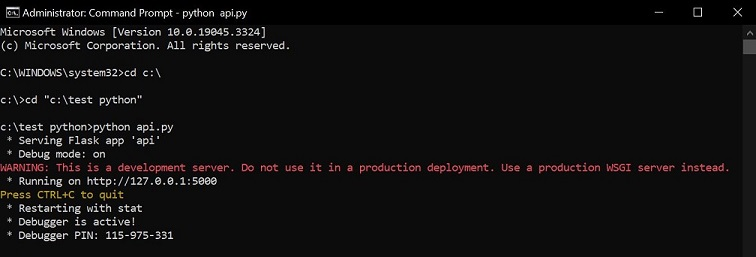
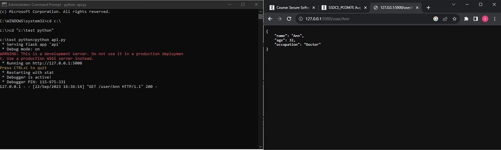
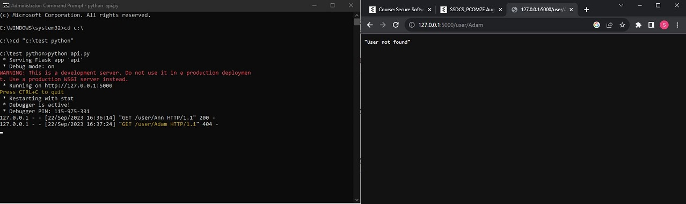
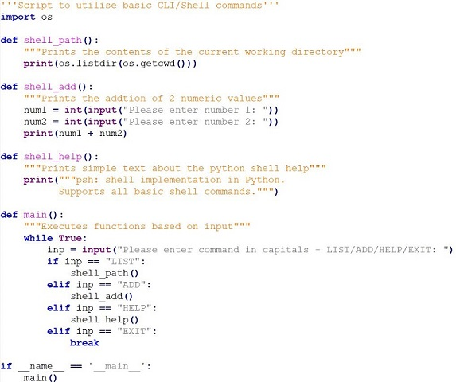
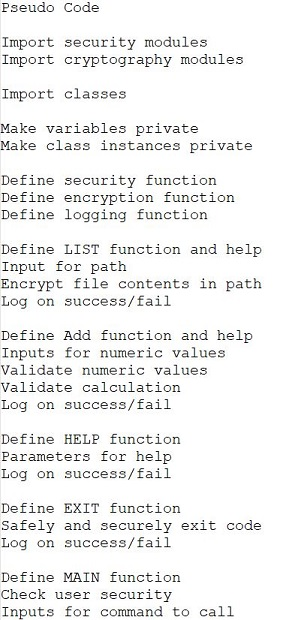

API development
The exercise was to use a prepared python script to run, analyse and inspect a simplistic API built and executed in Python. Examining the execution and calls to pre-set API endpoints we were set with several questions related to the running and use of the API.
Question 1
What command did you use to compile and run the code? The code was run locally using the windows command line.
Question 2
What happens when this command (http://127.0.0.1:5000/user/Ann) is run, and why? Whilst not executing a command the result can be achieved by calling the URL in a browser. The terminal that is already running records and logs the transaction and returns the appropriate HTTP response. In this example a 200 (success) message is recorded in the terminal as the user 'Ann' exists.
Question 3
What happens when this command (http://127.0.0.1:5000/user/Adam) is run, and why? As per question 2 the command was executed in a browser. The difference in this scenario is the HTTP response is different. A 404 (error) is returned as the user 'Adam' does not exist. The message is dispakyed in the html.
Question 4
What capability is achieved by the flask library?
By importing the Flask library python has the capability of defining structured code for API functionality without having to code everything from scratch. Flask contains modules and functions inside the library that facilitate the creation of APIs in Python.
Simple Shell Command
The exercise was to write a simple CLI/Shell command to execute and run a number of commands. Consideration was to be made to answer several question about the code.
Question 1
What are the two main security vulnerabilities with your shell? The 2 main security vulnerabilities are lack of access control or authorisation and the script has access to the underlying os. This exposes attack surfaces where an attacker could gain access or inject commands to the os as well as not providing any sort of RBAC or authorisation control to the script.
Question 2
What is one recommendation you would make to increase the security of the shell? Seperate the code out further to ensure it is modular with seperate classes as well as introduce some form of authorisation and authentication to restrict access.
Pseudo code for program
References:
Prakash, D. (2018) Write a Shell in Python. Available from: https://danishpraka.sh/posts/shell-in-python/ [Accessed 23 September 2023].
Szabo, G. (2018) Create Your Own Interactive Shell with cmd in Python. Available from: https://code-maven.com/interactive-shell-with-cmd-in-python [Accessed 23 September 2023].
What is an Ontology?
Ontologies, and more specifically in Computer Science can be defined as categories, properties and relations between concepts, data and entities in a domain. However, ontologies are not just specific to computer science and can be applied to many different industries and their subsequent domains.
(Gruber 1993) discusses how an Ontology is an explicit specification of a concept and a concept is an abstract view of the domain. While the observations are valid I disagree that an ontology is a specification of an abstracted view. Rather that ontologies today are often the abstarcted view of the domain and do not require a definition of their own. It is perhaps as domains and industries have expanded and advanced that ontologies are becoming more of a standard or reference for domains so therefore do not require 2 levels of definition. As with many other
What is one recommendation you would make to increase the security of the shell? Seperate the code out further to ensure it is modular with seperate classes as well as introduce some form of authorisation and authentication to restrict access.
References:
Gruber, T. (1993) What is an Ontology.
Reyes-Pena, C. and Tovar-Vidal, M. (2019) Ontology: components and evaluation, a review. Research in Computing Science, 148(3): 257-265.